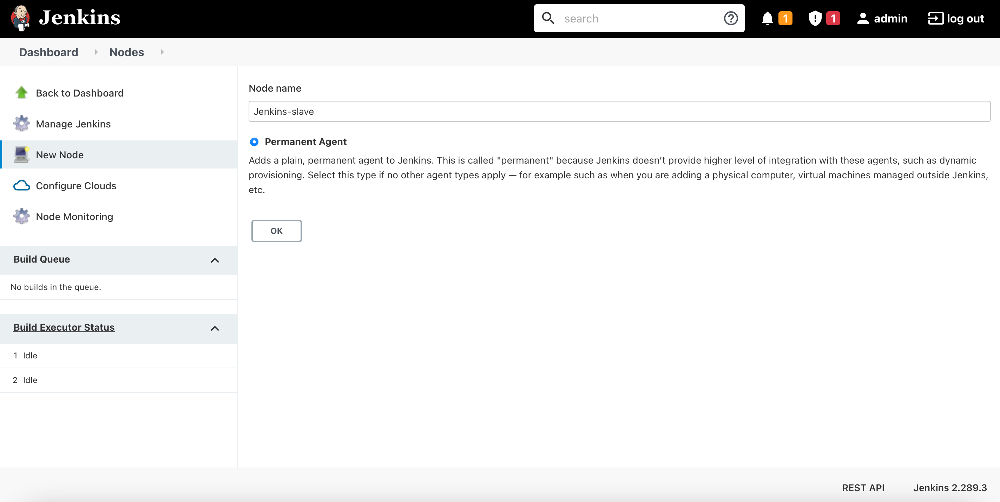
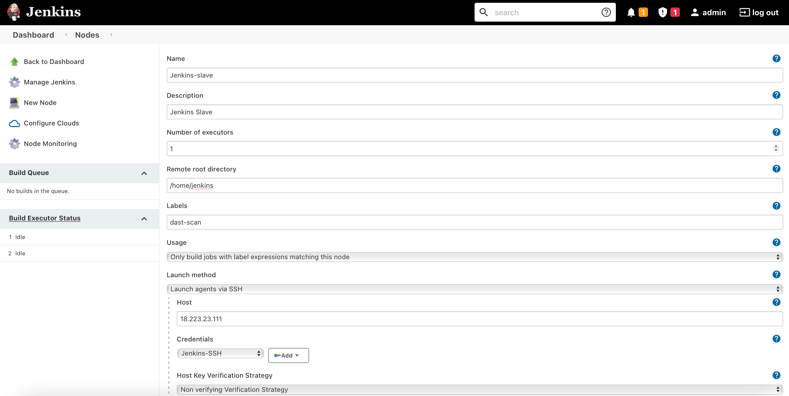

Shift Local Setup to AWS
Objective
The aim of this section is to shift the entire setup from local machine to AWS Cloud and solve the 10th point of the Problem Statement under Task 1.
About AWS
- Amazon Web Services (AWS) is the world's most comprehensive and broadly adopted cloud platform, offering over 200 fully featured services from data centers globally.
- Migrating your local/on-prem infrastructure to cloud can help reduce costs of operations, increase IT staff productivity, and reduce downtime.
Setup EC2 Instances
Amazon Elastic Compute Cloud (Amazon EC2) is a web service that provides secure, resizable compute capacity in the cloud. It is a service that enables business subscribers to run application programs in the computing environment. It can serve as a practically unlimited set of VMs.
An EC2 instance is a virtual server in Amazon's EC2 for running applications on the AWS infrastructure. Instances are created from Amazon Machine Images (AMI). AMIs are like templates that are configured with an OS, CPU power, memory, storage and other networking resources to suit user needs.
Steps to create an EC2 instance:
- Create an AWS account on https://aws.amazon.com.
- After logging in to your account, select
All Servicesand under theComputesection, clickEC2in theAWS Management Consolepage. You will be redirected toEC2 Management Console - Select
Launch EC2 instance. - Select AMI of your choice, add security group (firewall rules) and SSH key pair. When adding key pair, the browser will automatically ask to download the private key file. Keep the file safe in directory of your choice. You will need it to establish an SSH connection with the instance.
- After launch, wait till the instance is up and running.
-
SSH into the instance using the following command.
ssh -i /path/to/private-key instance-username@instance-IP-addressTo get the instance-username for SSH login based on your instance OS/distro, refer this documentation. For an Ubuntu instance, the username is
ubuntu. -
Create three instances; Jenkins server (master), DAST server (agent), Production server.
Jenkins Server
A Jenkins server is setup to automate the software development life cycle using CI/CD pipelines. DVNA NodeJs application which is to be deployed on Production server will first undergo multiple security testing in the Jenkins server prior to deployment.
Note: Initially, I tried running all the scans in Jenkins instance via pipeline. But the instance crashed/hung when running the OWASP ZAP scan. Since I'm using a Free Tier version of AWS, I can only use 1GB memory instances, which isn't sufficient to run all these scans. To solve this issue, I'm using a Master-Agent architecture in which the DAST scan will be allocated to an Agent (separate instance). The Master-Agent architecture of Jenkins is used for distributed build environments, where the workload of building projects is distributed to multiple agent nodes or slaves.
Create two EC2 instances for Jenkins. The Master instance is the main Jenkins server which will also perform static analysis on test DVNA, while the Agent instance will be used to perform DAST scan on test DVNA deployed on Master.
Jenkins Master
Automate the installation process of Jenkins, Docker and static analysis tools by running the following script in the Jenkins Master instance.
#!/bin/bash
sudo apt update
# Install Java
sudo apt install -y default-jre default-jdk unzip
# Install Jenkins
wget -q -O - https://pkg.jenkins.io/debian-stable/jenkins.io.key | sudo apt-key add - &&
sudo sh -c 'echo deb http://pkg.jenkins.io/debian-stable binary/ > /etc/apt/sources.list.d/jenkins.list' &&
sudo apt update &&
sudo apt install -y jenkins &&
sudo systemctl start jenkins
# Install Docker
sudo curl -fsSL https://get.docker.com -o get-docker.sh &&
sudo sh get-docker.sh &&
sudo usermod -aG docker jenkins
# Install Python3 and Pip3
sudo apt install -y python3-pip
# Install NodeJs and NPM
sudo curl -sL https://deb.nodesource.com/setup_14.x | sudo -E bash - &&
sudo apt install -y nodejs
# Install NodeJsScan (SAST)
sudo pip3 install njsscan
# Install AuditJS (SAST)
sudo npm install -g auditjs
# Install OWASP Dependency-Check (SCA)
cd /var/lib/jenkins &&
wget -P ./ https://github.com/jeremylong/DependencyCheck/releases/download/v6.2.2/dependency-check-6.2.2-release.zip &&
wget -P ./ https://github.com/jeremylong/DependencyCheck/releases/download/v6.2.2/dependency-check-6.2.2-release.zip.asc &&
sudo unzip ./dependency-check-6.2.2-release.zip
# Install CycloneDX (SBoM)
sudo npm install -g @cyclonedx/bom
# Install JSHint (Code Linting)
sudo npm install -g jshint
# Install ESLint (Code Linting)
# Note: To use eslint, manually create a .eslintrc.json file in the `jenkins` home directory.
# Copy the file content from documentation
sudo npm install -g eslint
Create a .eslintrc.json config file to run ESLint scan.
{
"env": {
"browser": true,
"commonjs": true,
"es2021": true
},
"extends": "eslint:recommended",
"parserOptions": {
"ecmaVersion": 12
},
"rules": {
}
}
After the installation process is complete, we need to enable SSH communication between Master and Slave. Create SSH keys in jenkins user home directory.
sudo su - jenkins
ssh-keygen -t ed25519
The public and private SSH keys are stored in <Jenkins-Home-Dir>/.ssh directory.
Jenkins Slave/Agent
The Jenkins agent instance will be used to perform DAST scan on DVNA running on Master. Run the following bash script after logging into the instance.
#!/bin/bash
sudo apt update
# Install Java
sudo apt install -y default-jre default-jdk
# Install Docker
sudo curl -fsSL https://get.docker.com -o get-docker.sh &&
sudo sh get-docker.sh
To work with this instance from pipeline, we will be creating a new user - jenkins. Add this user to docker group to enable running docker containers without sudo.
sudo adduser jenkins
sudo usermod -aG docker jenkins
Change to user jenkins and create a .ssh directory in its home directory.
sudo su - jenkins
ssh jenkins@localhost
touch ~/.ssh/authorized_keys
To allow SSH connection from Master to Slave, copy the public key of Master instance into ~/.ssh/authorized_keys created in Slave.
Production Server
Install docker on the production server the same way you installed it on the Jenkins server (you can just run the bash script below).
#!/bin/bash
sudo apt update
# Install Docker
sudo curl -fsSL https://get.docker.com -o get-docker.sh &&
sudo sh get-docker.sh
To work with this instance from pipeline, we will be creating a new user - jenkins. Add this user to docker group to enable running docker containers without sudo.
sudo adduser jenkins
sudo usermod -aG docker jenkins
Change to user jenkins and create a .ssh directory in its home directory.
sudo su - jenkins
ssh jenkins@localhost
touch ~/.ssh/authorized_keys
To allow SSH connection from Jenkins Master to Production, copy the public key of Master instance into ~/.ssh/authorized_keys created in Production.
The instances have now been successfully setup!
Steps to Setup Master-Slave Architecture
- Go to
Dashboard->Manage Jenkins->Manage Nodes and Clouds->New Node. -
Give a name to the node (
Jenkins Slavein my case) and selectPermanent agent.
-
Give details about the agent.
- Description - Description of the agent
- Number of executors - The maximum number of concurrent builds that Jenkins may perform on this node (default is 1).
- Remote root directory - Provide the directory in the agent instance dedicated to Jenkins (
/home/jenkins, in my case) - Labels - Give label name (
dast-scan, in my case) which can be used to specify stage(s) to use this agent instead of the master node. - Usage - I selected
Only build jobs with label expressions matching this nodebecause I only want this agent to be used when its label expression is specified in the project. - Launch Method - Chose
Launch agents via SSHand provided IP of agent instance and credentials required to log on to the instance. - Availability - Selected the default option of
Keep this agent online as much as possible.

Pipeline
pipeline {
agent any
stages {
stage ('Initialization') {
steps {
sh 'echo "Starting the build!"'
}
}
stage ('Build') {
environment {
MYSQL_USER="dvna"
MYSQL_DATABASE="dvna"
MYSQL_PASSWORD="passw0rd"
MYSQL_RANDOM_ROOT_PASSWORD="yes"
MYSQL_HOST="mysql-db"
MYSQL_PORT=3306
}
steps {
sh 'echo "MYSQL_USER=$MYSQL_USER\nMYSQL_DATABASE=$MYSQL_DATABASE\nMYSQL_PASSWORD=$MYSQL_PASSWORD\nMYSQL_RANDOM_ROOT_PASSWORD=$MYSQL_RANDOM_ROOT_PASSWORD\nMYSQL_HOST=$MYSQL_HOST\nMYSQL_PORT=$MYSQL_PORT" > ~/vars.env'
sh 'docker run --rm -d --name dvna-mysql --env-file ~/vars.env mysql:5.7 tail -f /dev/null'
sh 'docker run --rm -d --name dvna-app --env-file ~/vars.env --link dvna-mysql:mysql-db -p 9090:9090 appsecco/dvna'
sh 'docker cp dvna-app:/app/ ~/ && mkdir ~/reports && chmod 777 ~/reports'
}
}
stage('NodeJsScan Analysis') {
steps {
sh 'njsscan --json -o ~/reports/nodejsscan-report ~/app || true'
}
}
stage('Auditjs Analysis') {
steps {
sh 'cd ~/app; auditjs ossi > ~/reports/auditjs-report || true'
}
}
stage ('OWASP Dependency-Check Analysis') {
steps {
sh '~/dependency-check/bin/dependency-check.sh --scan ~/app --out ~/reports/dependency-check-report --format JSON --prettyPrint || true'
}
}
stage('OWASP ZAP Analysis') {
agent {
label 'dast-scan'
}
steps {
sh 'docker run --rm -i -u zap --name owasp-zap -v ~/:/zap/wrk/ owasp/zap2docker-stable zap-baseline.py -t http://3.143.222.142:9090 -r zap-report.html -l PASS || true'
}
}
stage ('Retrieve ZAP report from Slave'){
steps {
sh 'scp jenkins@3.143.222.142:~/zap-report.html ~/reports'
}
}
stage ('Generating Software Bill of Materials') {
steps {
sh 'cd ~/app && cyclonedx-bom -o ~/reports/sbom.xml'
}
}
stage ('JSHint Analysis') {
steps {
sh 'jshint $(find ~/app -type f -name "*.js" -o -name "*.ejs" | grep -v node_modules) > ~/reports/jshint-report || true'
}
}
stage ('ESLint Analysis') {
steps {
sh 'eslint -c ~/.eslintrc.json -f html --ext .js,.ejs -o ~/reports/eslint-report.html ~/app || true'
}
}
stage ('Remove DVNA from Jenkins') {
steps {
sh 'rm -rf ~/app'
sh 'docker stop dvna-app && docker stop dvna-mysql'
sh 'docker rmi appsecco/dvna'
}
}
stage ('Deploy DVNA to Production') {
steps {
sh 'ssh -o StrictHostKeyChecking=no jenkins@18.222.182.128 "docker stop dvna-app && docker stop dvna-mysql && docker rm dvna-app && docker rm dvna-mysql && docker rmi appsecco/dvna || true"'
sh 'scp ~/vars.env jenkins@18.222.182.128:~/'
sh 'ssh -o StrictHostKeyChecking=no jenkins@18.222.182.128 "docker run -d --name dvna-mysql --env-file ~/vars.env mysql:5.7 tail -f /dev/null"'
sh 'ssh -o StrictHostKeyChecking=no jenkins@18.222.182.128 "docker run -d --name dvna-app --env-file ~/vars.env --link dvna-mysql:mysql-db -p 9090:9090 appsecco/dvna"'
}
}
}
}